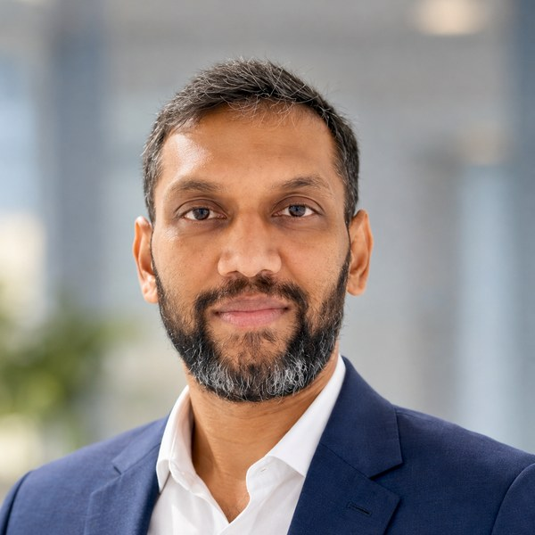

Senior Product Owner with 14+ years leading enterprise transformation across pharma, healthcare, logistics, and regulatory technology — currently automating regulatory reporting at GSK.

I'm a Senior Product Owner and Business Analysis leader who has spent 14+ years shaping and delivering complex enterprise transformation — across pharmaceutical, healthcare, logistics, supply chain, and regulatory technology.
My career has progressed from hands-on business analysis and international ERP implementations to product ownership, product strategy, and AI-enabled transformation. I specialise in translating complex business and compliance challenges into clear product strategies, future-state processes, and deliverable solutions.
In my current assignment, I support Regulatory Affairs Technology at GSK, where I help shape regulatory reporting automation — defining AI use cases, redesigning processes, and delivering high-fidelity prototypes, all while keeping GxP compliance and audit traceability intact.
Five roles, four industries, one thread: taking ambiguous, high-compliance problems and shipping products that measurably work. Expand any role for the full case study.
Automating 60% of GSK's regulatory reporting with AI — without compromising GxP compliance.
Replaced legacy clinical supply systems with a validated SaaS platform across manufacturing, packaging, and distribution.
Delivered a fully remote logistics platform during COVID-19 — 25% more bookings, 15% revenue growth in six months.
Turned around a failing US healthcare benefits platform serving millions of citizens across multiple states.
Progressed Business Analyst to Product Owner in 5.5 years across four international ERP rollouts.
His insights were instrumental as we advanced the clinical supply chain programme — his collaborative approach and deep domain knowledge made him a valuable asset to the team.
A unique ability to balance stakeholder needs while keeping the team focused on a clear product vision. I wholeheartedly recommend Vignesh for any future roles in product management or leadership.
He consistently delivered results, turning his hand to different areas, understanding the issue, and delivering with minimal impact to customers, clients, or the business.
Open to Senior Product Owner, Product Manager, AI Transformation Product Manager, Regulatory Technology Product Manager, and Principal Business Analyst roles across the UK.
Currently based in Stevenage, UK. New UK roles would require employer-sponsored Skilled Worker visa sponsorship (previously sponsored) — happy to discuss details directly.